To enlarge, click some photos which have titles in light blue color background.
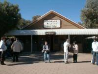 |
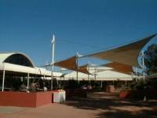 |
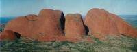 |
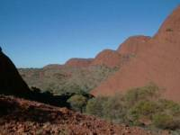 |
| Outback Pioneer | Shopping center of a hotel | Kata Tjuta (Olgas) 01 | Kata Tjuta (Olgas) 02 |
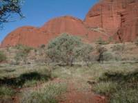 |
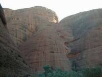 |
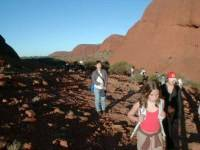 |
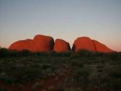 |
| Kata Tjuta (Olgas) 03 | Kata Tjuta (Olgas) 04 | Kata Tjuta (Olgas) 05 | Kata Tjuta (Olgas) Sunset |
We arrived at Ayers Rock by airplane and went straight to Ayers Rock Resort by a free bus.
There are only five hotels in Ayers Rock Resort and some camping places. These hotels are extremely expensive so it seems that many young and a lot of tours use camping places. We stayed at a lodge of Outback Pioneer with the heating and the bathroom, as for us it was comfortable.
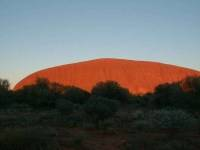 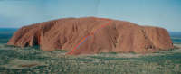 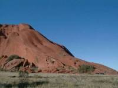 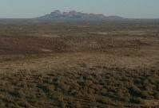 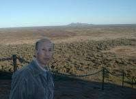 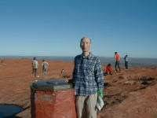 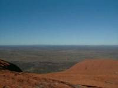 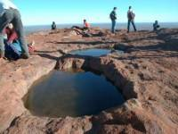
After watching sunrise I climbed up Uluru but my wife jointed in a bush walk course because she had given up climbing since she heard that it needed chain help. Picture 02 shows the route of climbing as a red line and the chain as blue lines. Before climbing I had thought it would be easy to climb, however about 7 or 8 meters this side of the chain was so steep that I almost gave up. Then I tried to watch how others climbed up and I did. At the top of Uluru I looked around but there was nothing without bushes and Olgas. It was quite fantastic and amazing. At the top of Uluru I found a few tiny pond and I was surprised when I saw tiny fishes in the tiny pond. I heard that they bear eggs before drying water and after raining eggs hatch out.
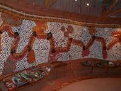 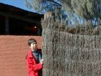 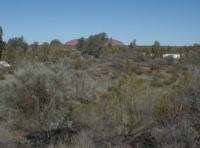 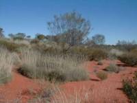
After that I went to the culture center of Aborigine and I saw their special art which was famous and popular in Australia. We found an observation platform behind our accommodation which was good place to see bushes and nature here.
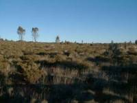 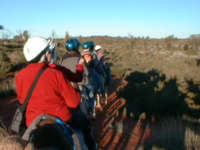 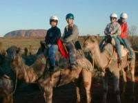 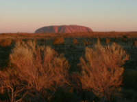
One of our attractive things to come here was riding on a camel. Camels were very obedient and they walk slowly, getting us on the back. We got a kick out of camel ridding.
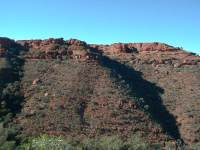 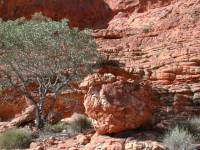 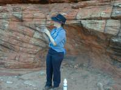 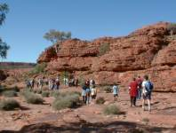
Before planning this trip I wasn't interested in Kings Canyon. We took this tour course to go to Alice Spring because it seemed that Kings Canyon was characteristic of the center of Australia. We joined in the 3.5 hours walking course there. It was fair day so getting soft wind we enjoyed good scenery.
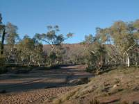 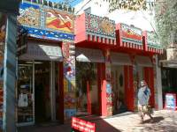 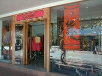 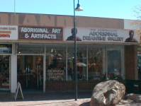
Early in the morning we took a walk along a river but we did not find any water in the river.
Alice Spring has a lot of Aboriginal people and I peeped a bit in such their lifestyles as eating in restaurants, stumbling streets and sitting on grass of public places or parks in company, but we didn't saw them working.
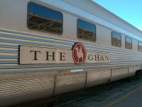 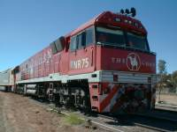 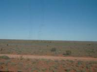 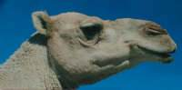
We were looking forward to the Ghan as famous for passing the center of Australia.
When I saw the Ghan at Alice Spring station, I was upset by the length of the train. Train station can't cover all the train. We walked long as if we took a walk, looking for our couch. We enjoyed the scenery seen form the Ghan window but staying for 28 hours was tired.
After noon we jointed in our first tours to Olgas. Passing through the valleys of huge rocks like mountains, we walked for a while and enjoyed nice view getting cool wind. We moved forward a view point of sunset of Olgas. After sunset the tour took us to a small place like a tiny park through bushes for barbecue and we tried to eat kangaroo meet too, but it was very cold so we can't see stars in the sky well.
Uluru (Ayers Rock)
Uluru (Ayers Rock) Sunrise
Uluru (Ayers Rock) 02
Uluru (Ayers Rock) 03
Uluru (Ayers Rock) 04
Uluru (Ayers Rock) 05
Uluru (Ayers Rock) 06
Uluru (Ayers Rock) 07
Uluru (Ayers Rock) 08
Culture center & around an observation platform
The culture center 01
The culture center 02
a view of Olgas
Bushes & red sand
Camel to sunset
bush way
camel 02
camel 03
sunset from on a camel
Kings Canyon
Kings Caniyon 01
Kings Canyon 02
Kings Canyon 03
Kings Canyon 04
Alice Spring
Alice Spring 01
Alice Spring 02
Alice Spring 03
Alice Spring 04
The Ghan
The Ghan 01
The Ghan 02
Bush field
a camel
{kind=link}
{kind=link}
{kind=link}
{kind=link}
{kind=link}
{kind=link}
{kind=link}
{kind=link}
{kind=link}
{kind=link}
{kind=link}
{kind=link}